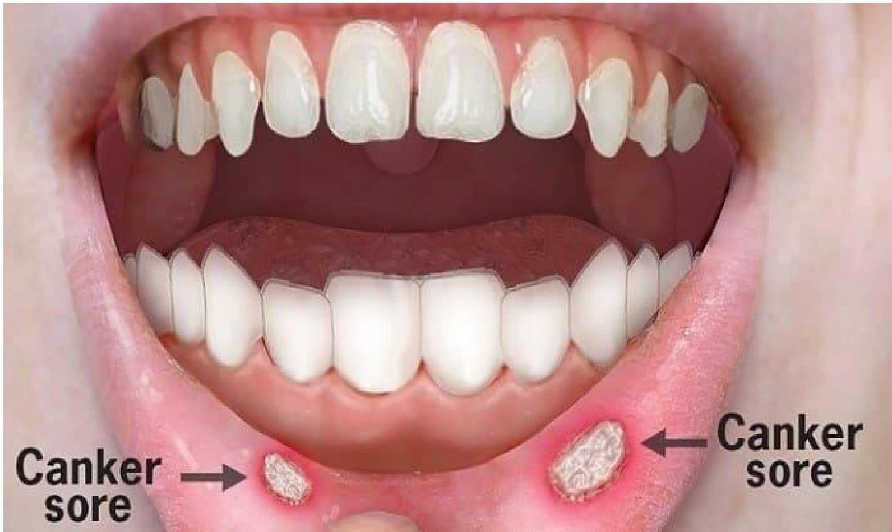
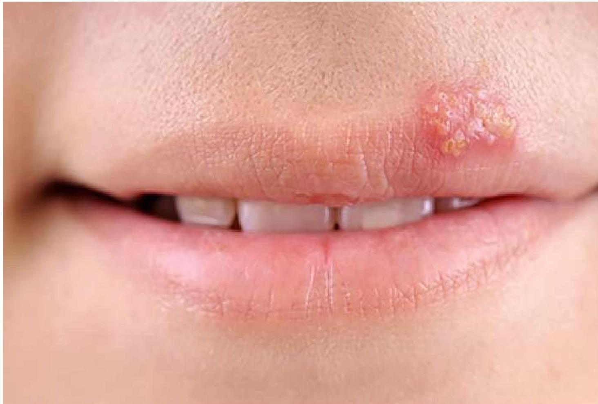

Oral & Dental Disorders
Prevention & Control of Dental Caries
Effective management of oral hygiene is essential for preventing dental caries.
- Practice effective mouth care.
- Reduce intake of starches and sugars (Refined Carbohydrates).
- Apply Fluoride to teeth or drink fluoridated water.
- Refrain from smoking.
- Control diabetes.
- Use pit and fissure sealants.
- Regular dental visits.
Gingivitis
Gingivitis is the inflammation of the Gums or Gingiva.
Fig. 2.1: Clinical appearance of Gingivitis
Causes & Pathophysiology
It is a non-destructive type of Periodontal disease. If untreated, it can lead to Periodontitis and loss of teeth.
- Dental Plaque: Biofilm accumulating on teeth formed by colonizing bacteria sticking to enamel.
- Calculus (Tartar): Plaque hardens at the base of teeth near gums, eventually irritating the gums and causing inflammation.
Risk Factors
| Category | Factors |
|---|---|
| Physiological | Hormonal changes (puberty, menopause, menstrual cycle, pregnancy), Ageing. |
| Systemic Diseases | Cancer, Diabetes, HIV. |
| Drugs | Diuretics (reduce saliva flow), Antihypertensives, Corticosteroids, Antidepressants. |
| Lifestyle | Smoking, Poor diet (Vitamin C deficiency). |
Clinical Features
- Red Puffy gums that bleed easily on brushing teeth
- Tender gums painful to touch
- Halitosis (Bad breath)
- Inflamed or swollen gums
- Receding or soft gums
Management
Treatment Strategy
- Hygiene: Effective brushing, flossing, plaque and tartar removal.
- Medication: Topical antiseptics, NSAIDs for inflammation.
- Antibiotics: Amoxicillin (1st line), Amoxiclav, Clindamycin, Metronidazole.
- Rinses: Saline rinses.
Complications (Untreated)
- Abscess or infection in the gingiva or jawbone
- Periodontitis (can lead to loss of bone and teeth)
- Trench mouth (bacterial infections leading to ulceration of gums)
- Cardiovascular diseases (heart attack, stroke, risk of lung disease)
Periodontitis
Definition: A serious gum infection that damages gums and can destroy the jawbone. It is primarily caused by poor oral hygiene.
Fig. 2.2: Advanced Periodontitis
Clinical Features
- Halitosis (Bad breath)
- Toothache & Loose teeth
- Bright red, tender, or bleeding gums
- Receding gums & Tooth loss
Treatment
Medical & Hygienic Management
- Improved dental hygiene and professional cleaning of pockets around teeth.
- Tooth polishing and oral hygiene.
- Scaling: Removes Tartar and plaques.
- Root planing: Smoothing root surfaces.
- Topical antiseptics and oral antibiotics.
Surgical Treatments
- Flap surgery: Small incision into gum to lift tissue for deep scaling/planing.
- Soft tissue grafts: Tissue taken from palate.
- Bone grafting: Fragments of own bone, synthetic, or donated bone.
- Tissue stimulating protein: Applying special gel to stimulate growth of healthy bone and tissue.
Oral Thrush
An infection in which the fungus Candida albicans accumulates in the mouth. It causes white or yellowish bumps to form on the inner cheeks and tongue.
Fig. 2.3: Oral Thrush (Candidiasis)
Etiology & Risk Factors
Caused by overgrowth of Candida albicans when the immune system is compromised or microorganism balance is disrupted.
- Vulnerable Groups: Babies, people with immune deficiency, asthma patients using steroid sprays.
- Cancer therapy: Chemo/radiotherapy.
- Conditions: Leukaemia, HIV, Uncontrolled diabetes (weakens immune system).
Clinical Features
- White or yellowish lesions on the tongue or inner cheeks.
- Pain while swallowing.
- Halitosis.
- Altered taste.
- Cotton-like sensation in mouth.
Diagnosis & Treatment
Diagnosis: Examination of bumps, Biopsy, Throat swab culture, Endoscopy.
Pharmacologic Management
- Fluconazole (Diflucan): Oral antifungal medication.
- Clotrimazole (Mycelex Troche): Antifungal lozenge.
- Nystatin (Nystop, Nyata): Swish in mouth or swab (for babies).
- Itraconazole
Stomatitis
Stomatitis is a general term for an inflamed and sore mouth. It can disrupt a person's ability to eat, talk, and sleep.
Types of Stomatitis
| Feature | Canker Sore (Aphthous Ulcer) | Cold Sore (Fever Blister) |
|---|---|---|
| Appearance | Single pale/yellow ulcer with red outer ring. Usually on cheeks, tongue, inner lip. | Fluid filled blisters on or around the mouth. Later crust over with a scab. |
| Symptoms | Painful. | Tingling/burning before sores appear. Painful. Associated with flu-like symptoms. |
| Duration | Disappears in 5-10 days. Tends to recur. | Gone in 7-10 days. |
| Image |

|

|
Causes & Triggers
- Trauma: Biting cheek/tongue/lip, braces, sharp broken teeth, burning mouth with hot food.
- Habits: Chewing tobacco.
- Medical: Gingivitis, Cancer therapy (chemo/radiation), meds for Rheumatoid arthritis or epilepsy.
- Nutritional: Frequent Canker sores may indicate Folate or Vitamin B12 deficiency.
Treatment
General & Canker Sore Treatment
- Lidex gel
- Aphthasol (anti-inflammatory paste)
- Pindex mouth wash
- Anti-inflammatory drugs to reduce swelling and pain
Cold Sore Treatment
- Val acyclovir (Valtrex) at the first sign of attack
- Coating the lesion with protective ointment (e.g., 5% acyclovir)
- Applying ice to the lesion
Dentoalveolar Abscess
Also referred to as an abscessed tooth or periapical abscess. It involves the collection of pus in the apical dental periosteum and tissue surrounding the apex of the tooth.
Fig. 2.4: Periapical Abscess
Types
-
Acute Abscess: Usually secondary to suppurative pulpitis from dental caries. Infection extends through apical foramen.
-
Chronic Abscess: Slowly progressive. May lead to "blind dental abscess" (periapical granuloma). Often discovered on X-ray.
Clinical Manifestations
- Dull, gnawing continuous pain
- Surrounding cellulitis and oedema of adjacent facial structures
- Gum swelling opposite the apex of the tooth
- Difficulty opening mouth (Trismus)
- Systemic reaction: Fever and Malaise
Fig. 2.5: Clinical presentation of Dental Abscess
Management
Medical & Surgical Management
- Needle aspiration or drilling into pulp chamber to relieve pressure/drainage.
- Incision through gingiva to jawbone for drainage.
- Tooth extraction or root canal therapy.
- Antibiotics and opioids for pain.
Nursing Management
- Assess for bleeding after treatment.
- Instruct patient to use warm saline/water rinse.
- Administer/teach regarding antibiotics and analgesics.
- Dietary advancement: Liquid → Soft → Tolerated diet.
- Ensure follow-up appointments.
Test Your Understanding
Complete this quiz to assess your comprehension of Topic 02: Oral & Dental Disorders.
Loading quiz...